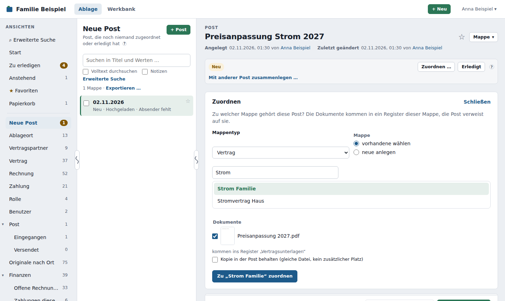
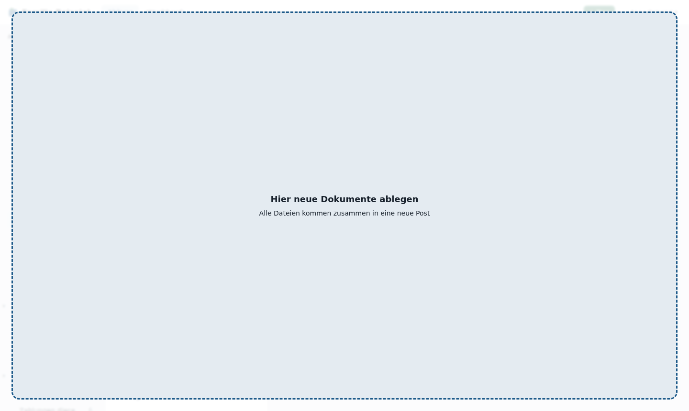
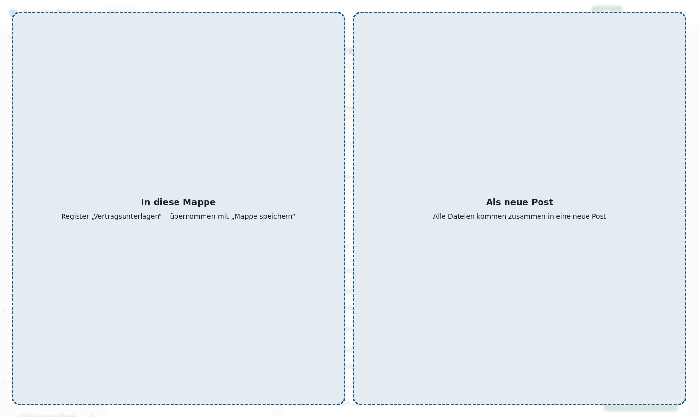
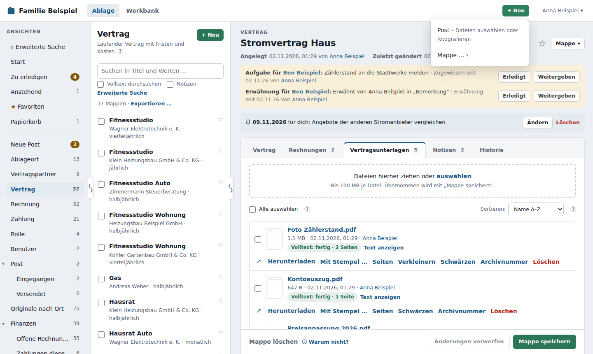

Post¶
Alles, was ins DMS kommt oder hinausgeht, ist Post: ein eingescannter Brief, ein hochgeladenes PDF, eine verschickte E-Mail, ein Scan aus dem Eingangsordner, eine aus einem Postfach abgeholte E-Mail. Du musst also nicht erst die passende Mappe suchen und das richtige Register wählen: Leg das Dokument als Post ab und ordne es zu, wenn du Zeit hast.

Neue Post¶
In der Ablage steht die Ansicht Neue Post über den übrigen Ansichten (ein Administrator kann sie verschieben). Sie zeigt alle Post, die noch niemand zugeordnet oder erledigt hat. Gibt es welche, ist die Zahl daneben farbig hervorgehoben, wie bei Zu erledigen.
Neue Post anlegen – von überall¶
- Dateien ins Fenster ziehen: Zieh eine oder mehrere Dateien irgendwo ins Browserfenster des DMS, egal auf welcher Seite. Es erscheint die Fläche „Hier neue Dokumente ablegen“. Lässt du los, kommen alle Dateien zusammen in eine neue Post, und die öffnet sich gleich.
- + Neu in der Kopfzeile → Post: Dateien auswählen. Am Handy und Tablet heißt der Eintrag Post – Datei oder Foto wählen; darüber steht Post fotografieren (siehe Post erfassen am Handy).
- + Post oben in den Ansichten mit Post macht dasselbe.

Gibt es eine Datei schon? Bevor die Post entsteht, prüft das DMS jede Datei. Liegt eine schon in einer Mappe, die du sehen darfst, fragt es nach: je Datei steht, wo sie liegt (mit Link), und du hakst trotzdem ablegen an oder lässt sie weg. Weiter legt die Post mit den übrigen Dateien an, Abbrechen legt gar nichts an, ein Klick auf den Link bringt dich zur vorhandenen Mappe.
Den Betreff nimmt das DMS aus dem ersten Dateinamen; ändern kannst du ihn jederzeit. Der Absender bleibt leer, bis du ihn einträgst – du hast den Brief ja nur erfasst, nicht geschickt (wer erfasst hat, steht unter „Angelegt“ und in der Historie). In der Liste Neue Post steht dann „–“. Der Kanal heißt Hochgeladen. Dateien über 100 MB oder bei erreichter Speicherplatz-Grenze werden mit Grund gemeldet, die übrigen trotzdem abgelegt.
Auf einer geöffneten Mappe mit Dokumentenregister teilt sich die Fläche: In diese Mappe legt die Dateien wie bisher ins Register (übernommen mit Mappe speichern), Als neue Post macht eine neue Post daraus.

Die Fläche erscheint nur beim Ziehen von Dateien, nicht bei Text oder Links, und nur, wenn du Post anlegen darfst. Mit Esc oder wenn du das Fenster verlässt, verschwindet sie. Im Wartungsmodus und solange das DMS nicht erreichbar ist, erscheint stattdessen ein kurzer Hinweis.
+ Neu → Mappe … legt eine neue, leere Mappe eines Mappentyps an, den du anlegen darfst.
Post erfassen am Handy¶
Briefe fotografierst du am schnellsten mit Post fotografieren – als großer Knopf oben auf der Startseite und als erster Eintrag unter + Neu. Er öffnet direkt die Kamera, ohne die Auswahl „Fotomediathek / Foto aufnehmen / Datei auswählen“.
- Fotografiere die erste Seite und bestätige das Foto.
- Unten erscheint das Blatt mit den aufgenommenen Seiten. Weitere Seite fotografiert die nächste Seite desselben Briefs (z. B. die Rückseite). Mit × an einem Vorschaubild verwirfst du eine Seite.
- Fertig – als Post speichern: Aus allen Seiten wird ein PDF und daraus eine Post mit dem Betreff „Post vom 01.11.2026, 20:52“ (statt „image“). Den Betreff änderst du später beim Zuordnen.
- ✓ Post gespeichert – tippe Nächsten Beleg fotografieren, um gleich den nächsten Brief als eigene Post zu erfassen. Jetzt zuordnen öffnet die Post, Fertig zeigt, wie viele Belege du erfasst hast; sie liegen unter Neue Post.
So erfasst du mehrere Briefe hintereinander, ohne eine Mappe zu öffnen – zuordnen kannst du später am Rechner oder über Zu erledigen. Schließt du die Kamera ohne Foto (oder triffst versehentlich die Mediathek), bleibt das Blatt offen: Foto aufnehmen oder Foto aus der Mediathek wählen – du fängst nicht von vorn an. Das Handy verkleinert jedes Foto vor dem Hochladen (längste Seite 2400 Pixel); das spart Zeit und Platz.
Seite vergessen? In einer Post steht am Handy Seite hinzufügen: Die Kamera öffnet sich, und die neuen Seiten kommen ans Ende des PDFs dieser Post.
Zwei Posts zusammenlegen: Ist die Rückseite als eigene Post gelandet, öffne die Post mit der Vorderseite und tippe Mit anderer Post zusammenlegen … (auch am Rechner). Wähle die andere Post – ihre Seiten (PDFs und Fotos) kommen ans Ende des PDFs, die andere Post kommt in den Papierkorb. Dateien, die weder PDF noch Foto sind, lassen sich so nicht anhängen; solche Post ordnest du stattdessen zu.
Per E-Mail ins DMS¶
Hat dein Administrator ein Postfach eingerichtet (z. B. dms@…), leitest du Mails einfach dorthin weiter – oder lässt Rechnungen gleich dorthin schicken. Jede Mail wird eine neue Post mit Kanal E-Mail: Betreff, Absender und Datum aus der Mail, die Anhänge als Dokumente, der Text der Mail an der Post und auf Wunsch die ganze Mail als .eml.
Scan to E-Mail: Viele Scanner und Multifunktionsgeräte schicken Scans per Mail. Trag die Adresse des Postfachs als Ziel ein – jeder Scan wird neue Post.
Scannen in den Eingangsordner¶
Hat dein Administrator einen Eingangsordner eingerichtet, scannst du einfach in diesen Ordner („Scan to Folder“ am Scanner). Jede Datei wird eine eigene neue Post mit Kanal Ordner; den Betreff nimmt das DMS aus dem Dateinamen. Scannst du in deinen eigenen Unterordner, z. B. eingang/thomas/, steht die Post gleich für dich bei dir unter „Zu erledigen“. Die Datei verschwindet danach aus dem Ordner: Je nach Einstellung liegt sie in erledigt/ oder ist gelöscht. Was das DMS nicht übernehmen kann (z. B. eine leere oder zu große Datei), landet in fehler/.

Unter der Ansicht Post findest du alle Post, auch die zugeordnete und erledigte, mit den Unteransichten Eingegangen und Versendet.
Was an einer Post steht¶
| Feld | Bedeutung |
|---|---|
| Betreff | Titel der Post |
| Stand | Neu – noch nicht bearbeitet · Zugeordnet – gehört zu einer Mappe · Erledigt – nichts mehr zu tun |
| Kanal | wie sie ins DMS kam: Hochgeladen, E-Mail, Scan, Ordner, Import, API, WebDAV |
| Richtung | Eingehend oder Ausgehend |
| Datum, Absender, Empfänger, Nachricht | soweit bekannt |
| Für | wer sich darum kümmern soll |
| Zugeordnet zu | die Mappen, zu denen die Post gehört |
Kanal und Zugeordnet zu setzt das DMS selbst. Alles andere kannst du ändern wie bei jeder Mappe.
Für jemanden¶
Trägst du bei Für einen Benutzer ein, steht die Post bei ihm unter Zu erledigen mit der Aufgabe Post für dich. Wird sie zugeordnet, erledigt oder an jemand anderen gegeben, erledigt sich die Aufgabe von selbst. Ist der Benutzer abwesend, bekommt sie sein Vertreter.
Zuordnen¶
Oben in einer Post steht eine Leiste mit dem Stand und dem Knopf Zuordnen …:
- Wähle den Mappentyp, z. B. Rechnung.
- Wähle vorhandene wählen und suche die Mappe, oder neue anlegen.
- Wähle die Dokumente, die mitgehen. Vorausgewählt sind alle. Liegt ein Dokument schon in einer anderen Mappe, die du sehen darfst, steht das darunter – mit Link. Dann brauchst du es vielleicht nicht noch einmal abzulegen. Hat der Mappentyp mehrere Dokumentenregister, wählst du das Register.
- Zu „…“ zuordnen (bei einer vorhandenen Mappe) bzw. Weiter: neue Mappe ausfüllen.
Danach liegen die Dokumente in der Mappe, und die Post verweist auf sie. Ihr Stand ist Zugeordnet. In der Historie beider Mappen steht, was passiert ist. Der Volltext der Dokumente zieht mit um.
Bei Weiter: neue Mappe ausfüllen öffnet sich das Formular des Mappentyps. Betreff und Datum der Post sind als Vorschlag schon eingetragen. Nach Mappe speichern wird die Post der neuen Mappe zugeordnet.
Kopie in der Post behalten lässt die Dokumente zusätzlich in der Post liegen. Das kostet keinen Platz, denn das DMS speichert jede Datei nur einmal. Das ist praktisch, wenn ein Brief zu mehreren Mappen gehört, z. B. zur Rechnung und zum Vertrag. Du kannst eine Post beliebig oft zuordnen.
Ohne Zuordnung geht es auch: Erledigt für Werbung oder Dinge, die schon erledigt sind; Wieder neu, wenn doch noch etwas zu tun ist. Unnötige Post löschst du wie jede Mappe.
Sammelscan teilen¶
Hast du mehrere Briefe auf einmal gescannt, kommen sie als eine Post mit einem langen PDF an. So machst du daraus einzelne Posts:
- Öffne die Post und das Register mit dem PDF.
- Klicke neben dem PDF auf Seiten.
- Klicke bei der ersten Seite jedes weiteren Briefs auf Teilen ab hier. Leere Rückseiten kannst du gleich löschen, schiefe Seiten drehen.
- Übernehmen und die Rückfrage bestätigen.
Je Teil entsteht eine neue Post mit Stand Neu: Betreff „Sammelscan (Teil 1)“, „Sammelscan (Teil 2)“ …, Datum, Absender und „Für“ wie bei der Ausgangspost. Jede kannst du dann wie gewohnt zuordnen. Die Ausgangspost behält das ganze PDF, ist Erledigt und verweist unter „Zugeordnet zu“ auf die neuen – nichts geht verloren. Oben steht ein Hinweis mit Links zu den neuen Posts.
Umgekehrt geht es auch: Gehören zwei Posts zusammen (z. B. Vorder- und Rückseite einzeln gescannt), öffne die erste, wähle ihre PDFs und Zusammenfügen – siehe PDF bearbeiten. Über die Schnittstelle (API) fügt ein Programm auch PDFs aus mehreren Posts zusammen; eine Post, die dadurch leer ist, wird erledigt.
Versendete E-Mails¶
Verschickst du eine Mappe per E-Mail, legt das DMS die E-Mail als Post ab: Kanal E-Mail, Richtung Ausgehend, Stand Erledigt, zugeordnet zur Mappe. Betreff, Empfänger, Absender, Datum und Nachricht bleiben, wie sie verschickt wurden. Stand und Für kannst du ändern.
Wird eine Mappe gelöscht, bleibt die Post erhalten. Nur der Verweis auf diese Mappe entfällt.
Wer darf was?¶
Wer Post sieht, anlegt, bearbeitet und löscht, regeln die Berechtigungen des Mappentyps Post. Zum Zuordnen brauchst du das Recht, die Post und die Zielmappe zu bearbeiten.